Cluster 00
111 images · 15 test · species purity 17.1% · normalized-organ purity 31.5%
Species Aesculus glabra 19, Tilia americana 19, Acer saccharum 14, Lonicera morrowii 13
Normalized organs leaf 35, inflorescence 28, fruit 19, twig 14
Frozen, L2-normalized BioCLIP, DINOv3 and EfficientNet-B0 embeddings are compared without new inference or model training. K-means receives no species or organ labels.
BioCLIP has the strongest species association for every reported clustering metric and k, and for the original-space species distance contrasts.
No single representation leads every organ/view protocol. k=10: EfficientNet-B0; k=20: DINOv3; k=50: DINOv3. Original-space distance contrasts are strongest for EfficientNet-B0.
These are observations for this 1,641-image BioImages strict split only. They do not establish a general ranking of the models or a causal explanation.
Each cell is mean ± sample standard deviation across the 10 prespecified seeds 42–51. Every run uses k-means++ with n_init=1; no run is selected. Stability is pairwise ARI over all 45 seed pairs. Labels are joined only after clustering.
| Space | k | Species NMI | Organ NMI | Species purity | Organ purity | Stability ARI |
|---|---|---|---|---|---|---|
| BioCLIP 2.5 | 10 | 0.466 ± 0.018 | 0.133 ± 0.007 | 0.215 ± 0.008 | 0.369 ± 0.005 | 0.597 ± 0.084 |
| DINOv3 | 10 | 0.217 ± 0.014 | 0.503 ± 0.028 | 0.123 ± 0.004 | 0.729 ± 0.029 | 0.588 ± 0.067 |
| EfficientNet-B0 | 10 | 0.128 ± 0.007 | 0.535 ± 0.007 | 0.092 ± 0.003 | 0.774 ± 0.009 | 0.709 ± 0.070 |
| BioCLIP 2.5 | 20 | 0.597 ± 0.010 | 0.146 ± 0.012 | 0.339 ± 0.013 | 0.394 ± 0.014 | 0.519 ± 0.042 |
| DINOv3 | 20 | 0.322 ± 0.012 | 0.498 ± 0.022 | 0.173 ± 0.009 | 0.784 ± 0.023 | 0.594 ± 0.061 |
| EfficientNet-B0 | 20 | 0.212 ± 0.004 | 0.498 ± 0.011 | 0.122 ± 0.004 | 0.780 ± 0.009 | 0.544 ± 0.047 |
| BioCLIP 2.5 | 50 | 0.734 ± 0.005 | 0.196 ± 0.011 | 0.587 ± 0.011 | 0.469 ± 0.011 | 0.581 ± 0.028 |
| DINOv3 | 50 | 0.457 ± 0.005 | 0.490 ± 0.007 | 0.279 ± 0.008 | 0.835 ± 0.010 | 0.563 ± 0.030 |
| EfficientNet-B0 | 50 | 0.327 ± 0.005 | 0.456 ± 0.004 | 0.182 ± 0.003 | 0.800 ± 0.007 | 0.440 ± 0.030 |
All unordered cross-observation image pairs are used. The exact same pair indices and same/different masks are applied to all three embedding spaces. This analysis does not depend on K-means or 2D projection.
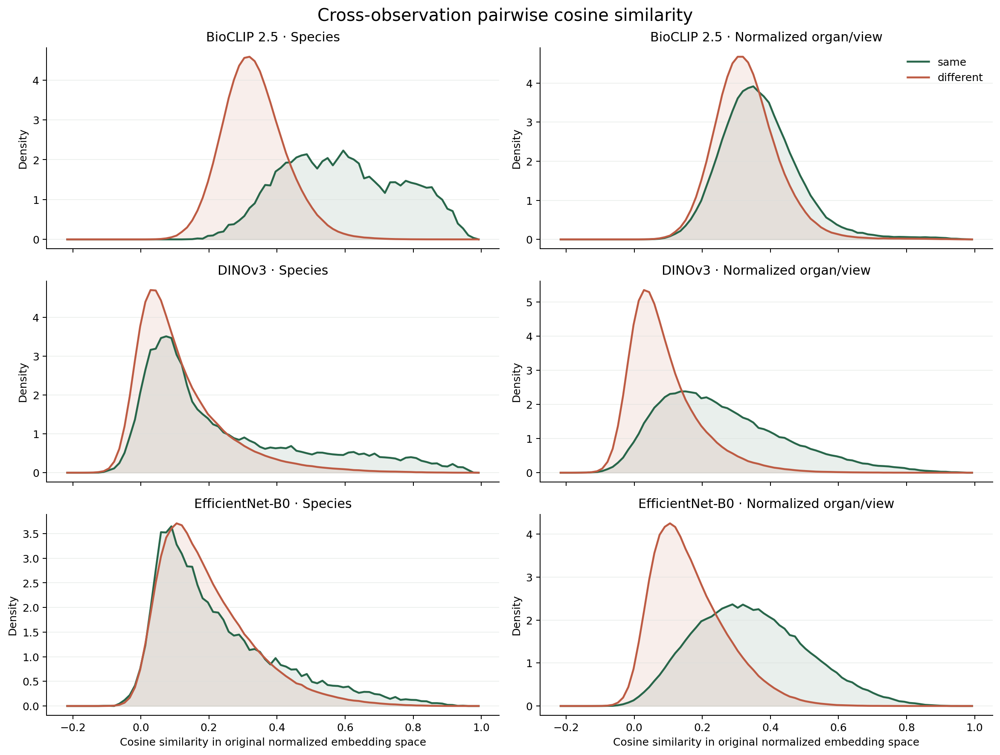
| Space | Comparison | Same pairs | Different pairs | Same mean | Different mean | Difference | Cohen's d |
|---|---|---|---|---|---|---|---|
| BioCLIP 2.5 | Species | 22,538 | 1,317,574 | 0.592 | 0.333 | 0.259 | 1.874 |
| BioCLIP 2.5 | Normalized organ/view | 230,706 | 1,109,406 | 0.370 | 0.331 | 0.040 | 0.374 |
| DINOv3 | Species | 22,538 | 1,317,574 | 0.239 | 0.116 | 0.123 | 0.628 |
| DINOv3 | Normalized organ/view | 230,706 | 1,109,406 | 0.260 | 0.088 | 0.172 | 1.143 |
| EfficientNet-B0 | Species | 22,538 | 1,317,574 | 0.227 | 0.195 | 0.033 | 0.202 |
| EfficientNet-B0 | Normalized organ/view | 230,706 | 1,109,406 | 0.343 | 0.164 | 0.179 | 1.286 |
PCA and UMAP are visualization tools only. 2D distances are not original embedding distances and should not be used as replacement evidence for the cosine analysis above.

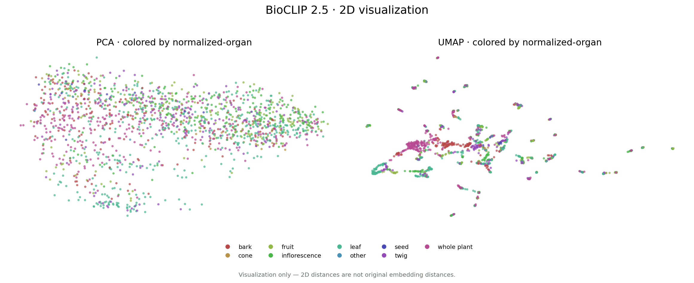

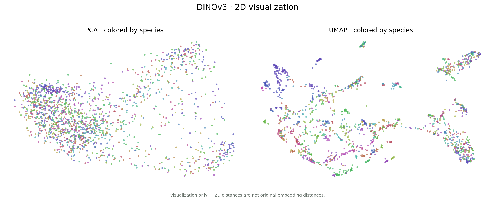

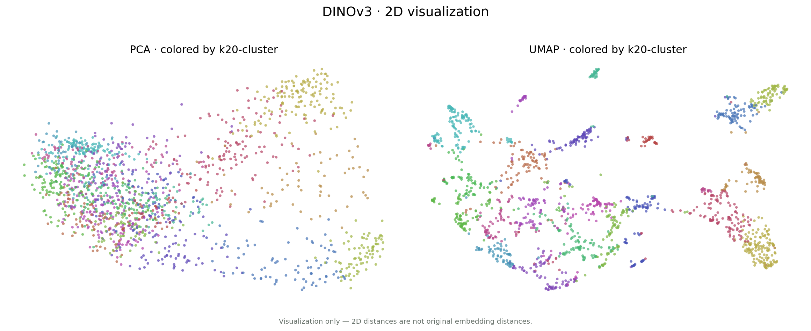
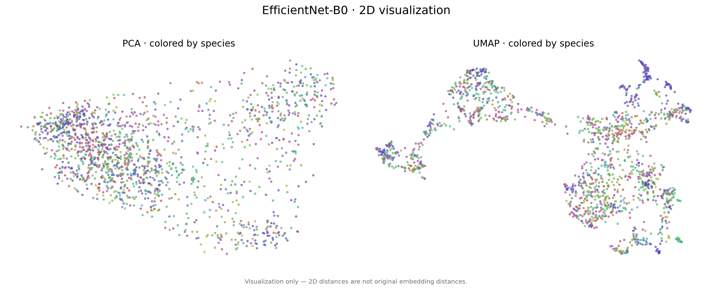

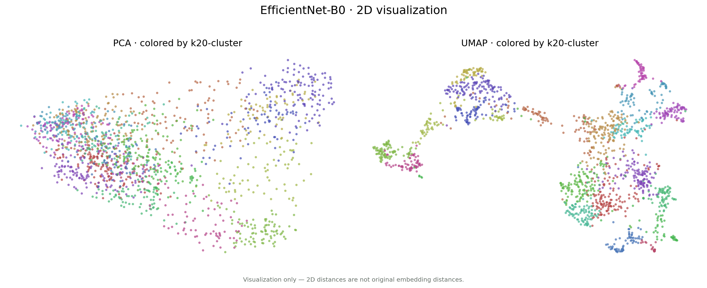
The existing deterministic seed-42, n_init=20 fits are retained only as qualitative reference atlases; they are not chosen from the 10 robustness runs. Organ summaries below use the normalized field. No cluster is automatically named.
111 images · 15 test · species purity 17.1% · normalized-organ purity 31.5%
Species Aesculus glabra 19, Tilia americana 19, Acer saccharum 14, Lonicera morrowii 13
Normalized organs leaf 35, inflorescence 28, fruit 19, twig 14

129 images · 16 test · species purity 74.4% · normalized-organ purity 53.5%
Species Quercus palustris 96, Quercus rubra 33
Normalized organs leaf 69, twig 17, fruit 17, bark 16

55 images · 13 test · species purity 32.7% · normalized-organ purity 36.4%
Species Sambucus racemosa 18, Sorbus americana 15, Sambucus nigra 11, Viburnum lantanoides 11
Normalized organs inflorescence 20, leaf 14, fruit 10, whole plant 9

200 images · 24 test · species purity 9.0% · normalized-organ purity 22.5%
Species Ginkgo biloba 18, Gymnocladus dioicus 16, Yucca filamentosa 12, Dirca palustris 10
Normalized organs twig 45, bark 41, leaf 37, inflorescence 36

92 images · 16 test · species purity 32.6% · normalized-organ purity 27.2%
Species Platanus occidentalis 30, Acer negundo 24, Sassafras albidum 23, Acer rubrum 11
Normalized organs leaf 25, inflorescence 19, whole plant 19, fruit 11

77 images · 11 test · species purity 49.4% · normalized-organ purity 39.0%
Species Carpinus caroliniana 38, Ostrya virginiana 15, Betula alleghaniensis 11, Betula lenta 6
Normalized organs leaf 30, bark 14, inflorescence 12, fruit 11

65 images · 11 test · species purity 36.9% · normalized-organ purity 36.9%
Species Cornus florida 24, Cercis canadensis 24, Robinia pseudoacacia 13, Yucca filamentosa 4
Normalized organs inflorescence 24, fruit 16, whole plant 12, leaf 6

91 images · 12 test · species purity 39.6% · normalized-organ purity 50.5%
Species Quercus alba 36, Quercus bicolor 23, Quercus macrocarpa 13, Quercus muehlenbergii 13
Normalized organs leaf 46, inflorescence 15, twig 11, bark 7

51 images · 4 test · species purity 27.5% · normalized-organ purity 47.1%
Species Fraxinus pennsylvanica 14, Fraxinus quadrangulata 14, Fraxinus americana 12, Gymnocladus dioicus 5
Normalized organs leaf 24, twig 9, inflorescence 6, fruit 6

90 images · 8 test · species purity 24.4% · normalized-organ purity 25.6%
Species Toxicodendron radicans 22, Ailanthus altissima 21, Rhus copallinum 20, Rhus glabra 17
Normalized organs leaf 23, fruit 21, whole plant 19, inflorescence 19

81 images · 11 test · species purity 25.9% · normalized-organ purity 33.3%
Species Cephalanthus occidentalis 21, Nyssa sylvatica 16, Lindera benzoin 15, Ilex verticillata 14
Normalized organs inflorescence 27, leaf 20, twig 13, fruit 11

121 images · 16 test · species purity 12.4% · normalized-organ purity 86.8%
Species Quercus alba 15, Fraxinus americana 13, Quercus palustris 12, Quercus rubra 10
Normalized organs whole plant 105, bark 16

48 images · 5 test · species purity 47.9% · normalized-organ purity 37.5%
Species Pyrus calleryana 23, Amelanchier arborea 18, Sorbus americana 3, Acer rubrum 1
Normalized organs inflorescence 18, leaf 10, fruit 8, twig 7

64 images · 10 test · species purity 78.1% · normalized-organ purity 26.6%
Species Gleditsia triacanthos 50, Robinia pseudoacacia 9, Gymnocladus dioicus 5
Normalized organs twig 17, leaf 15, inflorescence 13, bark 8

72 images · 5 test · species purity 30.6% · normalized-organ purity 23.6%
Species Juglans nigra 22, Juglans cinerea 19, Carya cordiformis 15, Carya ovata 10
Normalized organs leaf 17, twig 17, fruit 16, inflorescence 11

29 images · 4 test · species purity 55.2% · normalized-organ purity 34.5%
Species Populus deltoides 16, Populus tremuloides 11, Quercus palustris 2
Normalized organs whole plant 10, leaf 7, inflorescence 4, fruit 3

44 images · 3 test · species purity 88.6% · normalized-organ purity 29.5%
Species Fagus grandifolia 39, Castanea dentata 5
Normalized organs leaf 13, inflorescence 11, twig 8, fruit 7

122 images · 14 test · species purity 9.8% · normalized-organ purity 63.1%
Species Acer saccharum 12, Juglans cinerea 11, Ulmus americana 8, Acer rubrum 8
Normalized organs whole plant 77, bark 28, inflorescence 6, fruit 5

54 images · 7 test · species purity 29.6% · normalized-organ purity 38.9%
Species Juniperus virginiana 16, Pinus strobus 16, Tsuga canadensis 13, Picea rubens 8
Normalized organs cone 21, whole plant 13, bark 9, leaf 7

45 images · 6 test · species purity 40.0% · normalized-organ purity 28.9%
Species Prunus serotina 18, Pyrus calleryana 14, Salix nigra 12, Nyssa sylvatica 1
Normalized organs leaf 13, fruit 13, bark 6, twig 5

33 images · 2 test · species purity 33.3% · normalized-organ purity 60.6%
Species Pinus strobus 11, Juniperus virginiana 8, Tsuga canadensis 7, Picea rubens 6
Normalized organs cone 20, leaf 9, twig 4

79 images · 10 test · species purity 7.6% · normalized-organ purity 88.6%
Species Carya cordiformis 6, Quercus alba 4, Populus tremuloides 4, Cephalanthus occidentalis 4
Normalized organs twig 70, leaf 4, inflorescence 3, cone 1

59 images · 9 test · species purity 8.5% · normalized-organ purity 76.3%
Species Quercus palustris 5, Robinia pseudoacacia 4, Juglans cinerea 4, Quercus rubra 3
Normalized organs whole plant 45, bark 11, leaf 3

140 images · 25 test · species purity 9.3% · normalized-organ purity 98.6%
Species Fraxinus americana 13, Quercus palustris 12, Quercus rubra 11, Ulmus americana 11
Normalized organs whole plant 138, bark 2

81 images · 10 test · species purity 13.6% · normalized-organ purity 100.0%
Species Quercus palustris 11, Quercus alba 8, Quercus bicolor 5, Quercus rubra 5
Normalized organs bark 81

83 images · 18 test · species purity 10.8% · normalized-organ purity 73.5%
Species Sassafras albidum 9, Gymnocladus dioicus 8, Acer saccharum 7, Fraxinus pennsylvanica 6
Normalized organs inflorescence 61, fruit 14, twig 5, cone 2

91 images · 7 test · species purity 19.8% · normalized-organ purity 78.0%
Species Fagus grandifolia 18, Carpinus caroliniana 14, Ulmus americana 10, Ostrya virginiana 7
Normalized organs leaf 71, twig 10, fruit 5, inflorescence 5

61 images · 5 test · species purity 11.5% · normalized-organ purity 100.0%
Species Pyrus calleryana 7, Quercus bicolor 6, Quercus macrocarpa 3, Quercus muehlenbergii 3
Normalized organs leaf 61

91 images · 18 test · species purity 8.8% · normalized-organ purity 89.0%
Species Cephalanthus occidentalis 8, Aesculus glabra 7, Sorbus americana 7, Toxicodendron radicans 7
Normalized organs inflorescence 81, fruit 7, twig 2, leaf 1

39 images · 1 test · species purity 38.5% · normalized-organ purity 59.0%
Species Juglans cinerea 15, Gymnocladus dioicus 4, Carya cordiformis 3, Juglans nigra 3
Normalized organs fruit 23, seed 11, twig 3, cone 2

118 images · 15 test · species purity 48.3% · normalized-organ purity 90.7%
Species Quercus palustris 57, Quercus rubra 23, Quercus alba 18, Quercus bicolor 8
Normalized organs leaf 107, twig 11

69 images · 8 test · species purity 11.6% · normalized-organ purity 91.3%
Species Aesculus glabra 8, Rhus glabra 7, Rhus copallinum 5, Fraxinus americana 5
Normalized organs leaf 63, twig 3, whole plant 2, inflorescence 1

80 images · 9 test · species purity 8.8% · normalized-organ purity 90.0%
Species Carpinus caroliniana 7, Gleditsia triacanthos 5, Acer negundo 4, Dirca palustris 4
Normalized organs bark 72, twig 7, leaf 1

82 images · 10 test · species purity 15.9% · normalized-organ purity 51.2%
Species Cercis canadensis 13, Robinia pseudoacacia 10, Ginkgo biloba 8, Carpinus caroliniana 7
Normalized organs fruit 42, inflorescence 30, leaf 7, cone 2

74 images · 9 test · species purity 6.8% · normalized-organ purity 89.2%
Species Platanus occidentalis 5, Juglans cinerea 5, Acer saccharum 4, Fagus grandifolia 4
Normalized organs twig 66, bark 3, leaf 3, other 1

77 images · 6 test · species purity 42.9% · normalized-organ purity 32.5%
Species Gleditsia triacanthos 33, Robinia pseudoacacia 7, Ailanthus altissima 7, Rhus glabra 6
Normalized organs leaf 25, inflorescence 18, fruit 13, whole plant 10

91 images · 15 test · species purity 18.7% · normalized-organ purity 84.6%
Species Quercus palustris 17, Cornus florida 10, Pyrus calleryana 9, Quercus alba 4
Normalized organs fruit 77, twig 6, cone 3, inflorescence 3

79 images · 16 test · species purity 8.9% · normalized-organ purity 81.0%
Species Salix nigra 7, Populus deltoides 7, Carpinus caroliniana 5, Rhus copallinum 4
Normalized organs inflorescence 64, fruit 11, twig 2, cone 1

83 images · 10 test · species purity 14.5% · normalized-organ purity 66.3%
Species Acer negundo 12, Toxicodendron radicans 9, Sassafras albidum 8, Lindera benzoin 8
Normalized organs leaf 55, whole plant 18, fruit 8, inflorescence 1

131 images · 8 test · species purity 6.9% · normalized-organ purity 79.4%
Species Cercis canadensis 9, Acer rubrum 7, Platanus occidentalis 7, Juglans cinerea 5
Normalized organs whole plant 104, inflorescence 10, fruit 8, leaf 6

136 images · 22 test · species purity 6.6% · normalized-organ purity 49.3%
Species Fagus grandifolia 9, Gymnocladus dioicus 9, Gleditsia triacanthos 7, Yucca filamentosa 7
Normalized organs inflorescence 67, fruit 34, leaf 13, twig 12
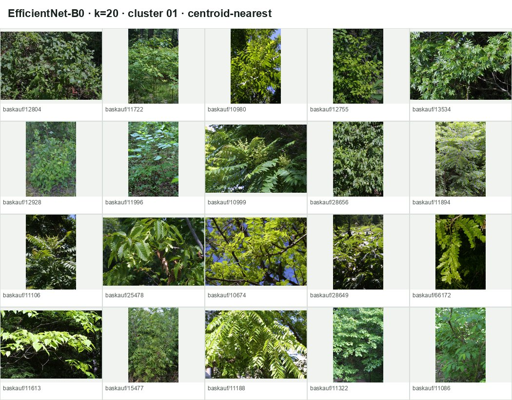
92 images · 10 test · species purity 6.5% · normalized-organ purity 40.2%
Species Rhus copallinum 6, Ailanthus altissima 6, Cornus florida 5, Gleditsia triacanthos 4
Normalized organs whole plant 37, leaf 25, inflorescence 14, fruit 12

126 images · 10 test · species purity 5.6% · normalized-organ purity 73.8%
Species Acer negundo 7, Gleditsia triacanthos 6, Nyssa sylvatica 5, Fraxinus quadrangulata 5
Normalized organs leaf 93, fruit 15, inflorescence 11, twig 4

65 images · 10 test · species purity 13.8% · normalized-organ purity 100.0%
Species Quercus palustris 9, Fraxinus americana 6, Juglans nigra 6, Fraxinus pennsylvanica 5
Normalized organs whole plant 65
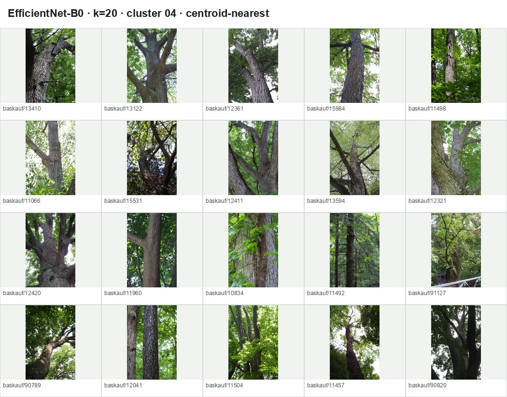
69 images · 8 test · species purity 7.2% · normalized-organ purity 76.8%
Species Robinia pseudoacacia 5, Juglans cinerea 5, Quercus palustris 4, Gleditsia triacanthos 3
Normalized organs whole plant 53, bark 15, leaf 1
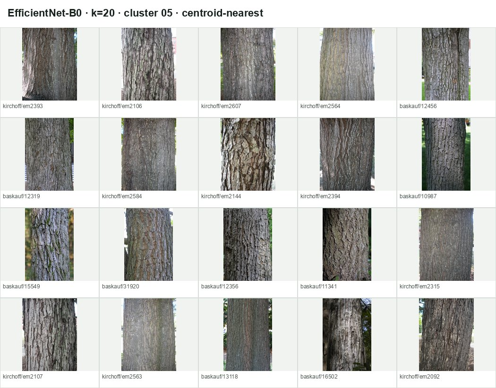
86 images · 10 test · species purity 12.8% · normalized-organ purity 100.0%
Species Quercus palustris 11, Quercus alba 8, Quercus bicolor 5, Quercus rubra 5
Normalized organs bark 86

122 images · 24 test · species purity 7.4% · normalized-organ purity 69.7%
Species Cephalanthus occidentalis 9, Gleditsia triacanthos 7, Pinus strobus 7, Sorbus americana 6
Normalized organs inflorescence 85, fruit 20, cone 8, leaf 4
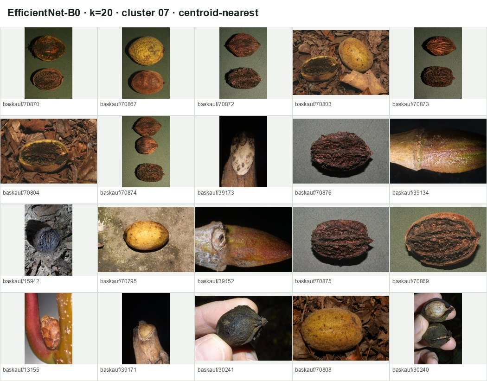
60 images · 5 test · species purity 25.0% · normalized-organ purity 36.7%
Species Juglans cinerea 15, Gymnocladus dioicus 4, Carya ovata 3, Pyrus calleryana 3
Normalized organs fruit 22, twig 13, seed 12, bark 5
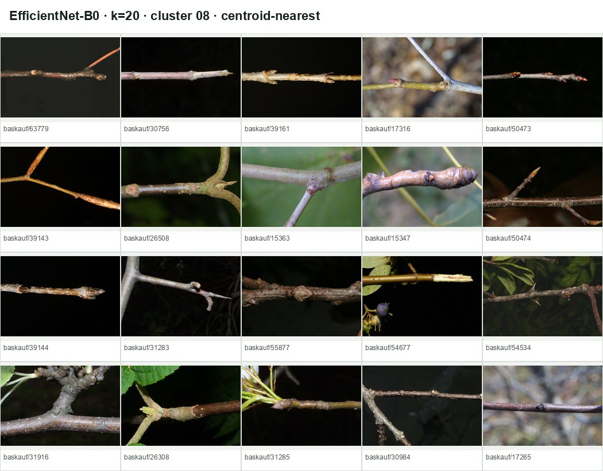
67 images · 7 test · species purity 7.5% · normalized-organ purity 94.0%
Species Pyrus calleryana 5, Juglans cinerea 5, Platanus occidentalis 4, Fagus grandifolia 4
Normalized organs twig 63, inflorescence 2, bark 1, leaf 1

87 images · 10 test · species purity 8.0% · normalized-organ purity 85.1%
Species Cornus florida 7, Aesculus glabra 6, Toxicodendron radicans 6, Robinia pseudoacacia 6
Normalized organs inflorescence 74, fruit 9, cone 2, twig 1
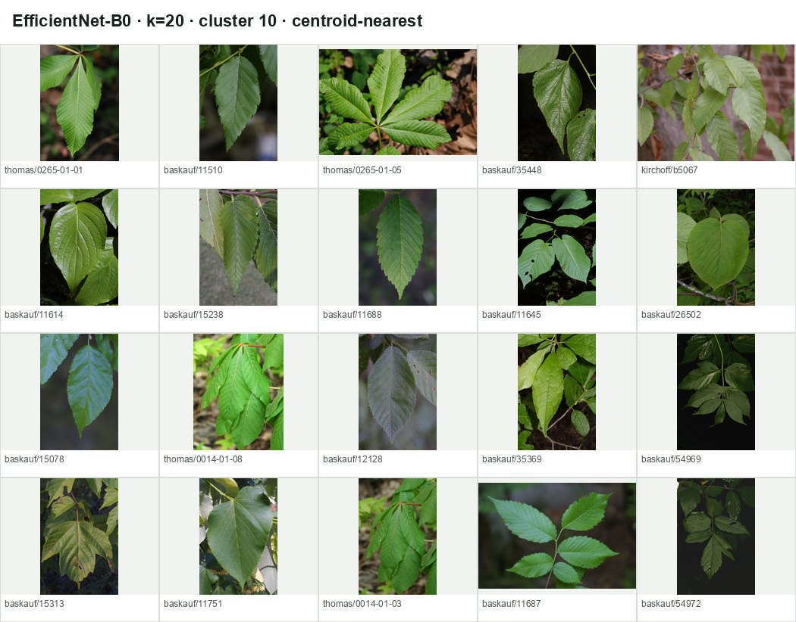
65 images · 10 test · species purity 10.8% · normalized-organ purity 100.0%
Species Carpinus caroliniana 7, Acer negundo 5, Pyrus calleryana 5, Aesculus glabra 4
Normalized organs leaf 65

70 images · 9 test · species purity 21.4% · normalized-organ purity 97.1%
Species Quercus palustris 15, Fagus grandifolia 8, Quercus rubra 7, Quercus bicolor 7
Normalized organs leaf 68, twig 1, inflorescence 1
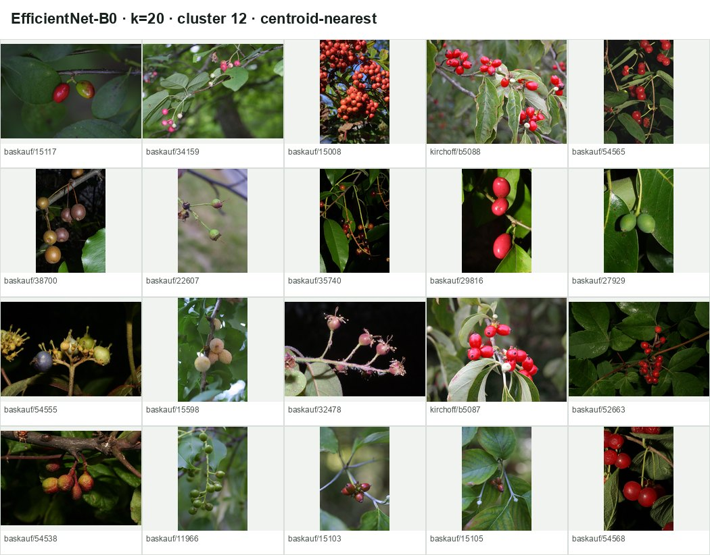
66 images · 13 test · species purity 13.6% · normalized-organ purity 83.3%
Species Cornus florida 9, Pyrus calleryana 7, Amelanchier arborea 4, Nyssa sylvatica 3
Normalized organs fruit 55, twig 5, cone 3, other 1

73 images · 6 test · species purity 11.0% · normalized-organ purity 64.4%
Species Platanus occidentalis 8, Acer saccharum 7, Acer rubrum 7, Ulmus americana 5
Normalized organs whole plant 47, inflorescence 11, fruit 8, leaf 4

114 images · 16 test · species purity 7.9% · normalized-organ purity 96.5%
Species Fraxinus americana 9, Quercus rubra 8, Quercus alba 7, Ulmus americana 6
Normalized organs whole plant 110, leaf 2, cone 1, fruit 1

122 images · 15 test · species purity 8.2% · normalized-organ purity 76.2%
Species Gleditsia triacanthos 10, Quercus palustris 9, Quercus rubra 6, Ulmus americana 5
Normalized organs twig 93, fruit 10, inflorescence 10, leaf 6
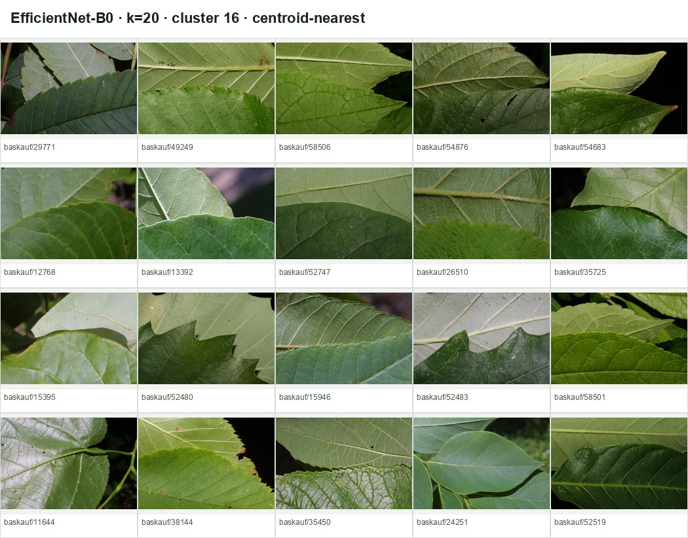
75 images · 6 test · species purity 9.3% · normalized-organ purity 98.7%
Species Pyrus calleryana 7, Quercus bicolor 4, Quercus muehlenbergii 3, Quercus macrocarpa 3
Normalized organs leaf 74, twig 1

56 images · 7 test · species purity 53.6% · normalized-organ purity 100.0%
Species Quercus palustris 30, Quercus rubra 10, Quercus alba 9, Quercus bicolor 5
Normalized organs leaf 56
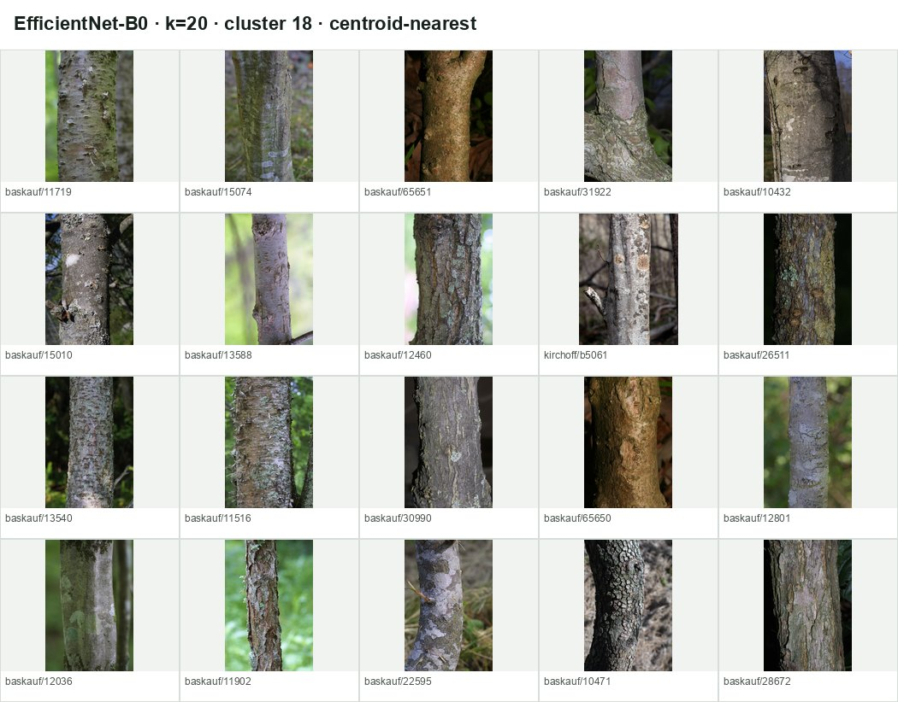
67 images · 9 test · species purity 7.5% · normalized-organ purity 91.0%
Species Carpinus caroliniana 5, Dirca palustris 4, Fagus grandifolia 4, Gleditsia triacanthos 4
Normalized organs bark 61, twig 4, leaf 2

23 images · 4 test · species purity 78.3% · normalized-organ purity 100.0%
Species Quercus palustris 18, Pyrus calleryana 2, Nyssa sylvatica 1, Quercus bicolor 1
Normalized organs fruit 23
| Representation | Species Top-1 | Species Top-5 | Genus Top-1 | Family Top-1 |
|---|---|---|---|---|
| BioCLIP 2.5 frozen + linear probe | 87.2% | 96.2% | 93.4% | 94.3% |
| DINOv3 frozen + linear probe | 56.4% | 83.4% | 61.6% | 62.6% |
| EfficientNet-B0 ImageNet frozen + linear probe | 21.8% | 47.9% | 29.4% | 33.6% |
organ mapping · normalized metadata · all clustering runs · clustering summary · distance summary · distance histograms · reference k=20 clusters · robustness check